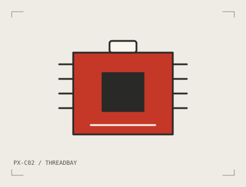

FIELD NOTES / BUILD SAFELY
Know the why.
Check the how.
Practical notes for the moments before, during and after a build. Read the relevant module sheet too: a connector that fits is not the whole story.

Keep the scope small and supervised.
These are low-voltage educational modules for small indoor models. They are not safety systems, calibrated instruments, medical devices or equipment for lifting people or heavy loads. Use a suitable certified USB supply, keep moving parts clear and stop a test if something is not behaving as expected.